Restraints - Child Restraint LATCH(R) Compliance
00 10 06September 30, 2010
2018263 Supersedes T.B. Group 00 number 00-06 dated September 8, 2000 to include additional models and model years
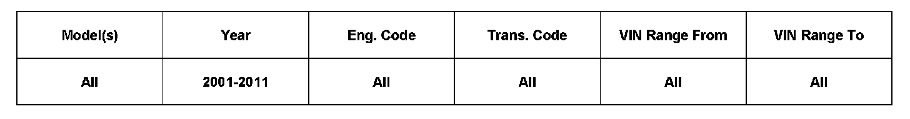
Vehicle Information
Condition
Child Restraint LATCH Guidance Fixture, Compliance with Federal Motor Vehicle Safety Standard 225 (USA Only)
Technical Background
Update to existing technical bulletin.
Production Solution
No production change required.
Service
Federal Motor Vehicle Safety Standard 225 requires that LATCH Guidance Fixtures be installed on vehicles equipped with built-in lower anchorages when such vehicle is delivered or displayed to a customer.
Therefore, LATCH Guidance Fixtures (qty. 4) are supplied with the vehicle beginning August 30, 2000 production.
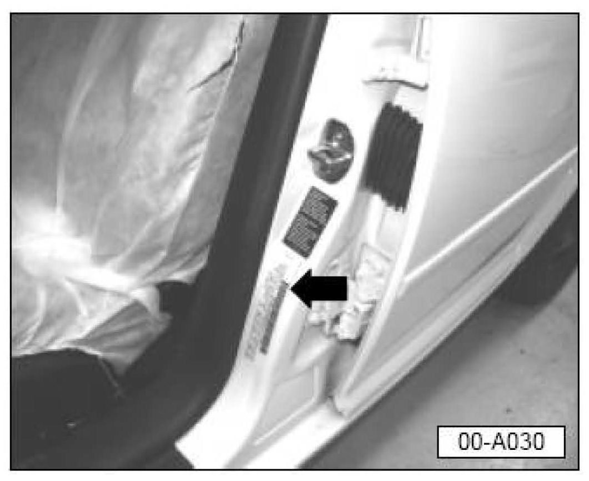
Vehicles with production date 09.00 (09/00) and later (see certification label on driver's side B-pillar-arrow- ) will be provided with the guidance fixtures and must be checked for installation during the Pre-Delivery Inspection (PDI).
Note:
LATCH Guidance Fixtures may be removed temporarily if necessary, when removing the plastic seat covering during the PDI. However, they MUST be reinstalled in accordance with this Technical Bulletin.
If the LATCH Guidance Fixtures are not attached to the anchorage bars, install as follows:
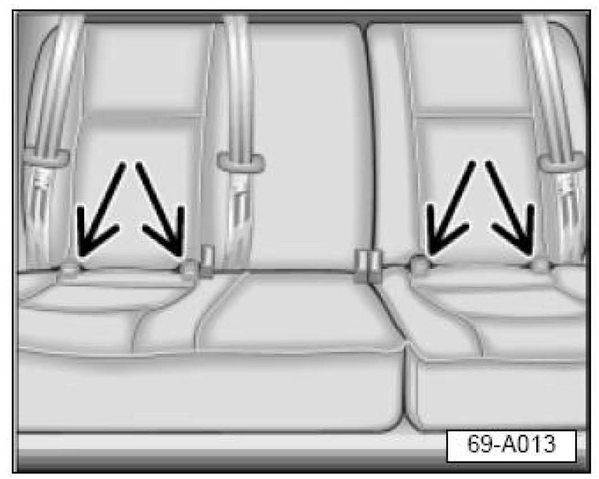
^ Locate the four anchorage bars between the rear seat back and rear seat bottom where the fixtures are to be installed (arrows).
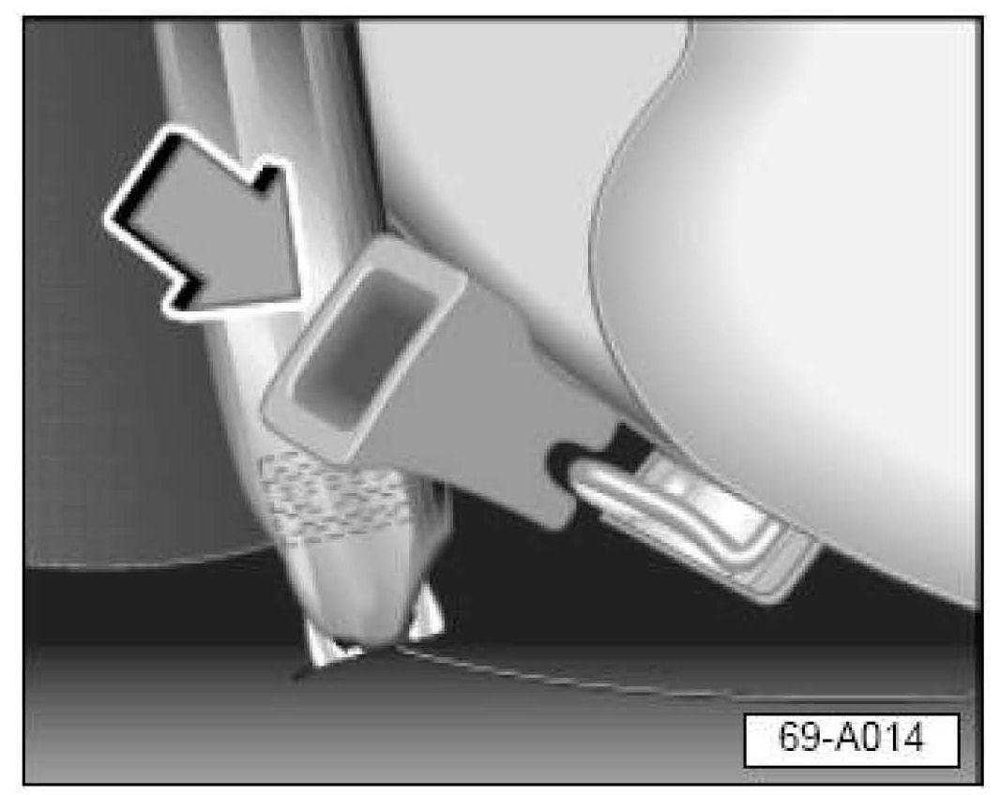
^ Install LATCH Guidance Fixture (arrow) by snapping Part No: 8L0 887 233 (not available as a single part) over anchorage bars as shown. Additional figures may be ordered using Part No: 8L0 019 233 (qty. 2 per package).
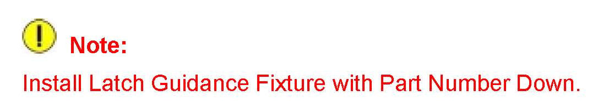
Note:
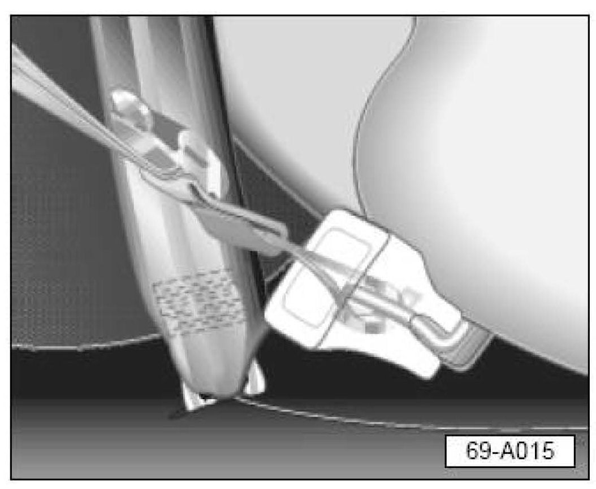
Once the LATCH Guidance Fixtures are installed, the anchorage bars will be readily accessible for child restraint lower anchorage installation to the lower anchorage bar as shown.
Refer to the Owner's Manual Booklet 3.5 for LATCH system description and usage instructions.
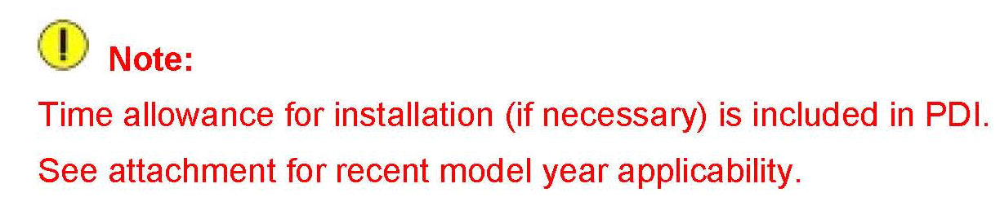
Note:
Warranty
Information only.
Required Parts and Tools
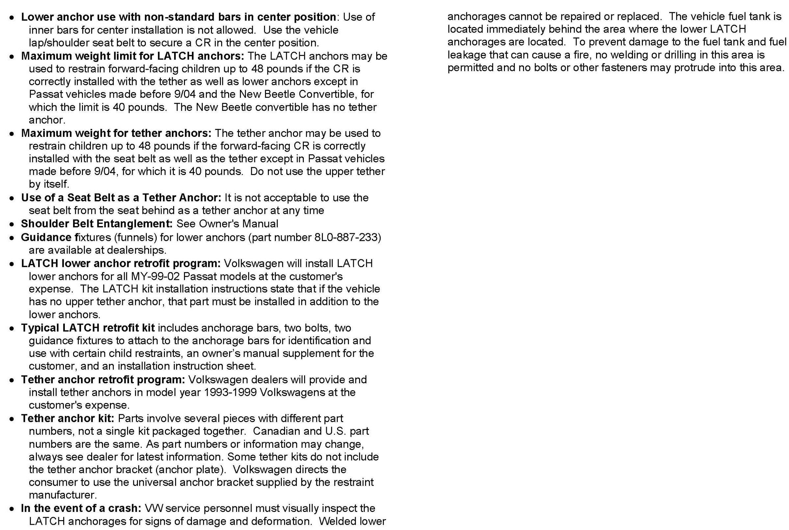
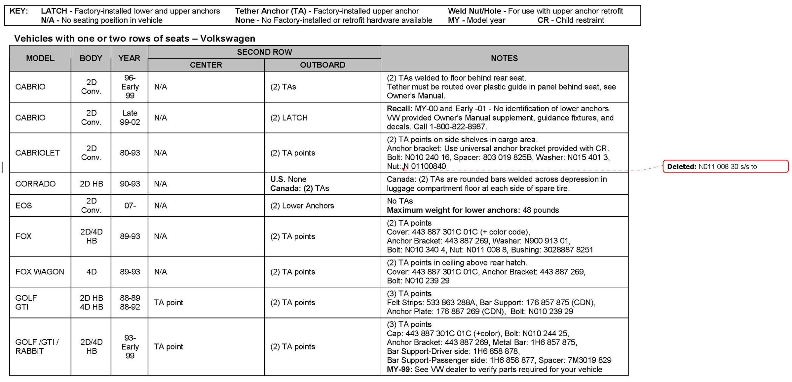
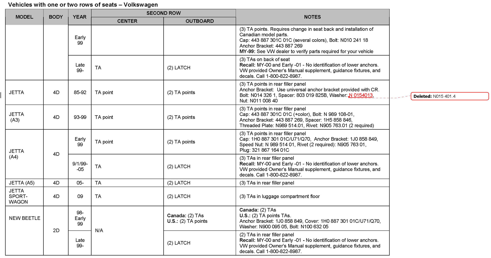
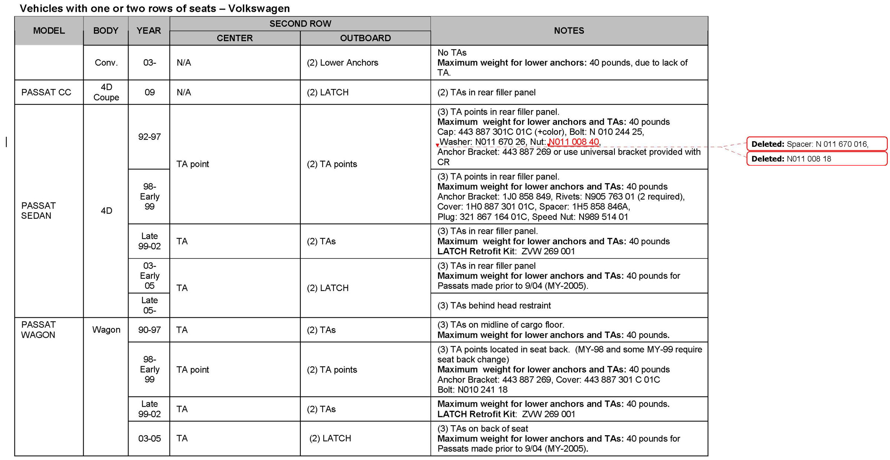
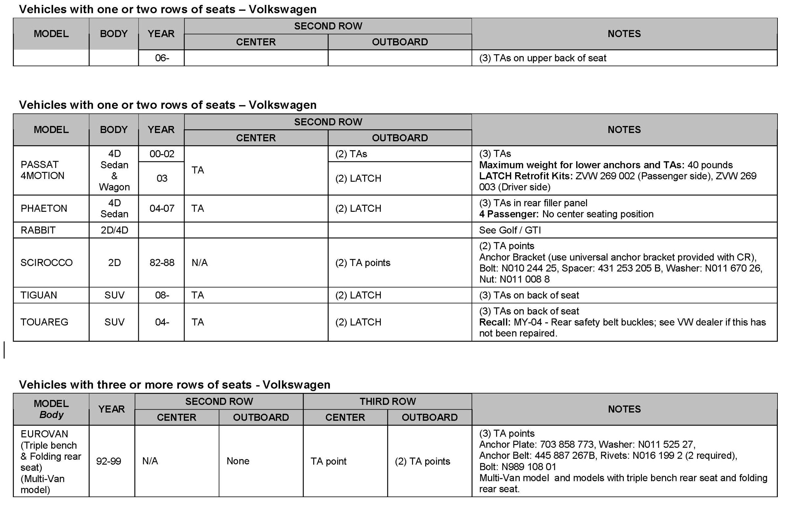
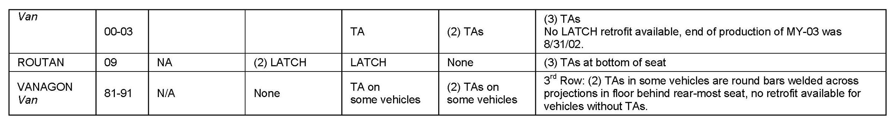
See attachment for special parts required.
No special tools required.
Additional Information
All part and service references provided in this Technical Bulletin are subject to change and/or removal.
Always check with your Parts Dept. and Repair Manuals for the latest information.